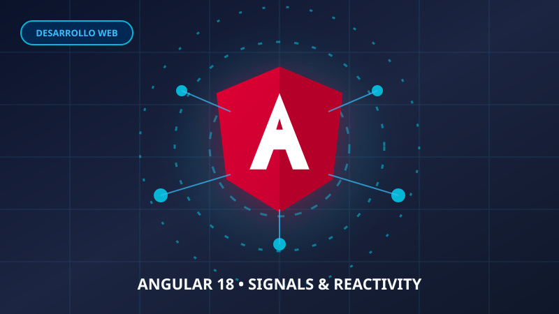

EXPERIENCIA DESTACADA
Migración de microservicios: Cómo optimizar respuestas sin morir en el intento
Exploramos cómo un equipo de desarrollo redujo en un 40% el uso de memoria cambiando tablas estáticas por arquitecturas reactivas y canales bidireccionales en tiempo real.

6
Artículos Publicados
100%
Reactividad & DOM
+12k
Lectores Mensuales
Subgrupo 19
Poli Front-End 2026
Noticias Destacadas
Las publicaciones más leídas y relevantes de esta semana.
Experiencias y Testimonios
Lo que nuestra comunidad de estudiantes e investigadores opina.
"La profundidad de los artículos de arquitectura en Angular y WebAssembly nos ayudó a optimizar nuestro proyecto final de semestre."
SM
Sonia Homez
Investigadora Subgrupo 19
"La interfaz es rápida, limpia y la función de favoritos con almacenamiento local facilita guardar referencias técnicas."
SI
Santiago Isaza
Desarrollador Front-End
"Excelente fuente de consulta sobre seguridad Zero Trust y buenas prácticas de consumo de APIs en tiempo real."
PV
Pedro Alejandro Varela
Estudiante Ingeniería Poli